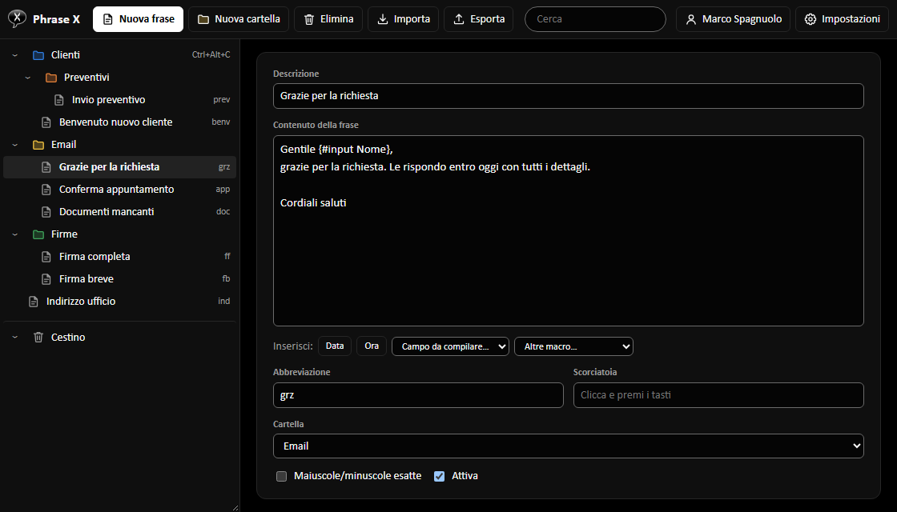
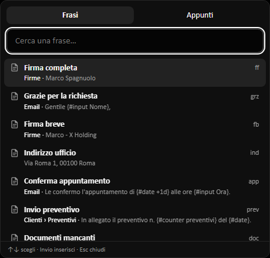
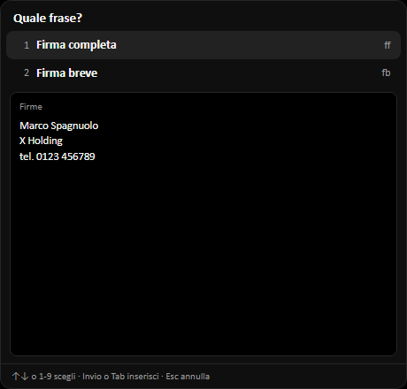
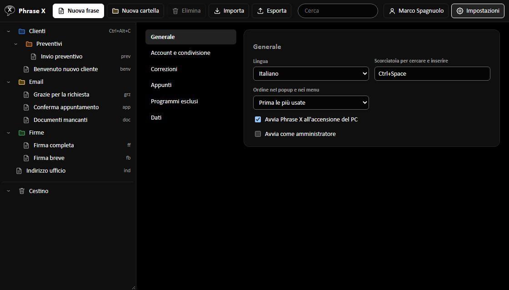

Phrase X
Espansore di testo open source per Windows. Scrivi un'abbreviazione e Phrase X la sostituisce con la frase completa: firme, risposte frequenti, date, moduli da compilare. Gratuito, senza limiti e senza pubblicità.

Cosa fa
- Abbreviazioni che si espandono mentre scrivi, in qualsiasi programma.
- Ricerca rapida delle frasi con una scorciatoia, anche dentro una cartella.
- Cronologia degli appunti, con testi e immagini.
- Macro: data e ora, appunti, campi da compilare, calcoli.
- Salvataggio automatico, cartelle colorate, copia e incolla nell'elenco.
- Accedi con Google: frasi e impostazioni sono salvate in uno spazio privato e nascosto del tuo Google Drive e le ritrovi su ogni PC dove accedi. Puoi anche condividerle con i colleghi, in sola lettura.
- Si aggiorna da solo quando esce una nuova versione.



Scarica
Il programma di installazione è nella pagina Release del progetto su GitHub. Il codice sorgente è pubblico con licenza MIT.
English — Phrase X is a free, open-source text expander for Windows. Type an abbreviation and it is replaced with the full phrase. Sign in with Google to keep your phrases and settings in a private, hidden space of your own Google Drive and find them on every PC. It updates itself.